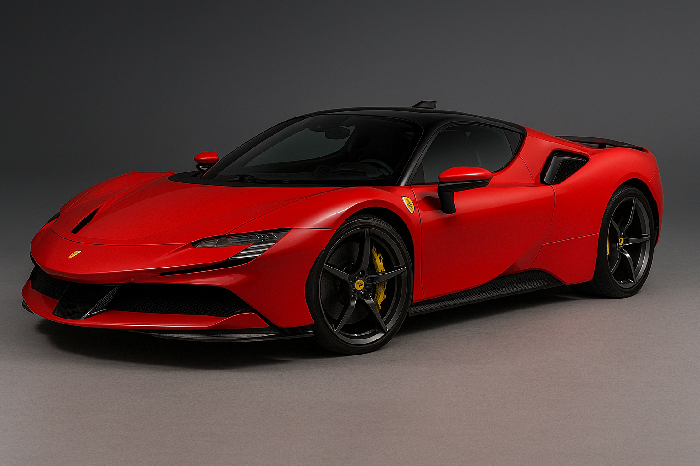

Ferrari SF90
Datos interesantes
El SF90 es el primer Ferrari híbrido enchufable con tracción total. Su potencia combinada es de 1,000 hp y acelera de 0 a 100 km/h en 2.5s.
Características
- Motor híbrido V8 + 3 eléctricos
- 1,000 hp combinados
- Tracción total
- Modo eléctrico urbano
Logros
- Primer híbrido enchufable de Ferrari
- Diseño con aerodinámica activa
- 0-100 km/h en 2.5s
- Tecnología de Fórmula 1